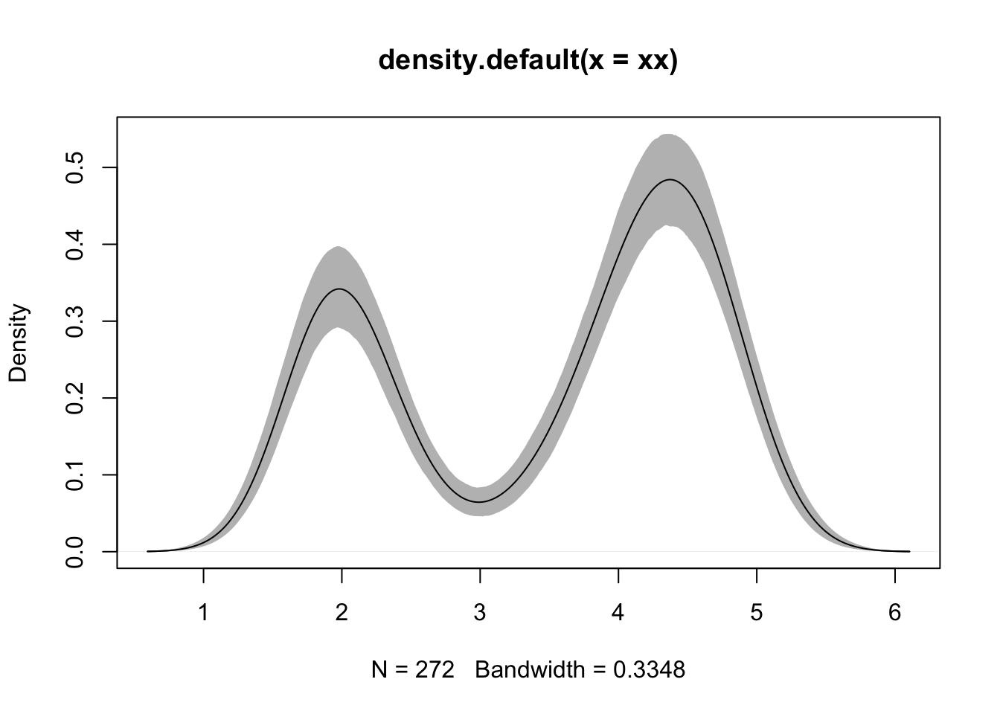

Chapter 2 A Gentle Introduction to Rcpp
2.1 Background: From R to C++
xx <- faithful$eruptions
fit1 <- density(xx)
fit2 <- replicate(1000, {
x <- sample(xx, replace=TRUE);
density(x, from=min(fit1$x), to=max(fit1$x))$y
})
fit3 <- apply(fit2, 1, quantile, c(0.025,0.975))
plot(fit1, ylim=range(fit3))
polygon(x = c(fit1$x, rev(fit1$x)),
y = c(fit3[1,], rev(fit3[2,])),
col='grey', border=F)
lines(fit1)
Note:
- use
replicateto reproduce some complicate function- use
polygonto plot confidence interval of a function and fill the polygon by grey.
2.2 A First Example
The Fibonacci sequence \(F_n\) is defined by \(F_n = F_{n-1} + F_{n-2}\) with 2 initial conditions \(F_0 = 0\) and \(F_1 = 1\).
R solution
fibR <- function(n) {
if (n == 0) return(0)
if (n == 1) return(1)
return (fibR(n - 1) + fibR(n - 2))
}C++ solution
# require Rcpp, inline
incltxt <- '
int fibonacci(const int x) {
if (x == 0) return(0);
if (x == 1) return(1);
return fibonacci(x - 1) + fibonacci(x - 2);
}
'
fibRcpp <- cxxfunction(signature(xs="int"),
plugin="Rcpp",
incl=incltxt,
body='
int x = Rcpp::as<int>(xs) ;
return Rcpp::wrap( fibonacci(x) ) ;
')Note: This uses two key Rcpp tools, the converter functions
asandwrap.
asis used to convert the incoming argumentxsfromSEXPto integer.wrapconverts the integer result in the integer variablexto theSEXPtype.- In
incltxt, we define a C++ functionfibonacci.cxxfunction: is used to turn code supplied as a text variable into an executable function.
rbenchmark::benchmark(fibR(20), fibRcpp(20))## test replications elapsed relative user.self sys.self user.child sys.child
## 1 fibR(20) 100 0.461 230.5 0.454 0.007 0 0
## 2 fibRcpp(20) 100 0.002 1.0 0.002 0.000 0 0Using Rcpp Attributes
One can simply declare certain “attributes,” notably whether a function is to be exported for use from R or from another C++ function (or both). One can declare dependencies whose resolution still relies on the plugin framework provided by inline.
# in c1.2.cpp:
# #include <Rcpp.h>
# using namespace Rcpp;
#
# // [[Rcpp::export]]
# int fibonacci(const int x) {
# if (x< 2)
# return x;
# else
# return (fibonacci(x - 1)) + fibonacci(x - 2);
# }
sourceCpp("c++/c1.2.cpp")
fibonacci(20)## [1] 6765Note:
- The
[[Rcpp::export]]attribute preceds the function definition.- The
sourceCpp()reads the code from the given source file, parses it for the relevant attributes, and creates the required wrappers before calling R to compile and link just likeinlinedoes.
A second R solution
One elegant solution to retain the basic recursive structure of the algorithm with- out incurring the cost of repeated computation of the same value is provided by a method called memoization.
mfibR <- local({
memo <- c(1, 1, rep(NA, 1000))
f <- function(x) {
if (x == 0) return(0)
if (x < 0) return(NA)
if (x > length(memo))
stop("x too big for implementation")
if (!is.na(memo[x])) return(memo[x])
ans <- f(x-2) + f(x-1)
memo[x] <<- ans
ans
}
})If a value for argument n has already been encountered, it is used. Otherwise, it is computed and stored in vector memo. This ensures that the recursive function is called exactly once for each possible value of n.
Note:
localfunction and<<-- run
mfibR(x)
A second C++ solution
mincltxt<- '
#include <algorithm>
#include <vector>
#include <stdexcept>
#include <cmath>
#include <iostream>
class Fib {
public:
Fib(unsigned int n = 1000) {
memo.resize(n); // reserve n elements
std::fill( memo.begin(), memo.end(), NAN ); // set to NaN
memo[0] = 0.0; // initialize for
memo[1] = 1.0; // n=0 and n=1
}
double fibonacci(int x) {
if (x < 0) // guard against bad input
return ( (double) NAN );
if (x >= (int) memo.size() )
throw std::range_error(\"x too large for implementation\");
if ( ! ::isnan(memo[x]))
return (memo[x]) ; // if exist, reuse values
// build precomputed value via recursion
memo[x] = fibonacci(x-2) + fibonacci(x-1) ;
return ( memo[x] ) ; // and return
}
private:
std::vector< double > memo ; // internal memory for precomp.
};
'
mfibRcpp <- cxxfunction(signature(xs="int"),
plugin="Rcpp", includes=mincltxt,
body='
int x = Rcpp::as<int>(xs);
Fib f;
return Rcpp::wrap( f.fibonacci(x-1) );
')We define a very simple C++ class Fib with three elements: + A constructor which is called once upon initialization. + A single public member function which computes Fn. + A private data vector holding the memoization values.
rbenchmark::benchmark(fibRcpp(30), mfibR(30), mfibRcpp(30))## test replications elapsed relative user.self sys.self user.child sys.child
## 1 fibRcpp(30) 100 0.227 NA 0.226 0 0 0
## 2 mfibR(30) 100 0.001 NA 0.000 0 0 0
## 3 mfibRcpp(30) 100 0.000 NA 0.000 0 0 0A third R solution
We can also compute \(F_n\) using iterative approach. The iterative solution improves further on the approach using memoization as it requires neither stateful memory nor recursion.
fibRiter<-function(n){
first <- 0
second <- 1
third <- 0
for (i in seq_len(n)) {
third <- first + second
first <- second
second <- third
}
return(first)
}A third C++ solution
fibRcppIter<-cxxfunction(signature(xs="int"), plugin="Rcpp",
body='
int n = Rcpp::as<int>(xs);
double first = 0;
double second = 1;
double third = 0;
for (int i=0; i<n; i++) {
third = first + second;
first = second;
second = third;
}
return Rcpp::wrap(first);
')Note:
- From this example, we do not need to write a Cpp function separately. We can put the Cpp function in the
bodyargument ofcxxfunction.
rbenchmark::benchmark(mfibR(100), mfibRcpp(100), fibRiter(100), fibRcppIter(100))## test replications elapsed relative user.self sys.self user.child sys.child
## 4 fibRcppIter(100) 100 0.000 NA 0.001 0.000 0 0
## 3 fibRiter(100) 100 0.000 NA 0.000 0.000 0 0
## 1 mfibR(100) 100 0.002 NA 0.001 0.001 0 0
## 2 mfibRcpp(100) 100 0.000 NA 0.001 0.000 0 02.3 A Second Example
Problem Setting
The context of the example is a vector autoregressive process of order one for two variables, or in formal notation a VAR(1). More generally, a VAR model consists of a number \(K\) of endogenous variable \(\mathbf{x}_t\). A VAR(p) process is then defined by a series of coefficient matrices \(A_j\) with \(j\in 1, \ldots, p\) such that \[ \mathbf{x}_t = A_1 \mathbf{x}_{t-1} + \ldots + A_p \mathbf{x}_{t-p} + \mathbf{u}_t \]
For example, we are considering the simplest case of two-dimensional VAR of order one, i.e. \(\mathbf{x}_t = A_1 \mathbf{x}_{t-1} + \mathbf{u}_t\).
R solution
##parameter and error terms used through out
a <- matrix(c(0.5,0.1,0.1,0.5),nrow=2)
u <- matrix(rnorm(10000),ncol=2)
##Let’s start with the Rversion
rSim <- function(coeff, errors) {
simdata <- matrix(0, nrow(errors), ncol(errors))
for (row in 2:nrow(errors)) {
simdata[row,] = coeff %*% simdata[(row-1),] + errors[row,]
}
return(simdata)
}
rData <- rSim(a, u)C++ Solution
In this solution, we use RcppArmadillo via inline to compile, link and load C++ code.
code <- '
arma::mat coeff = Rcpp::as<arma::mat>(a);
arma::mat errors = Rcpp::as<arma::mat>(u);
int m = errors.n_rows;
int n = errors.n_cols;
arma::mat simdata(m,n);
simdata.row(0) = arma::zeros<arma::mat>(1,n);
for (int row=1; row<m; row++) {
simdata.row(row) = simdata.row(row-1)*trans(coeff) + errors.row(row);
}
return Rcpp::wrap(simdata);
'
## create the compiled function
rcppSim <- cxxfunction(signature(a="numeric", u="numeric"),
code, plugin="RcppArmadillo")
rcppData <- rcppSim(a,u) # generated by C++ code
stopifnot(all.equal(rData, rcppData)) # checking resultsNote:
- set
plugin = "RcppArmadillo", while in Chapter 2.2, we setplugin = "Rcpp".
Comparison
suppressMessages(library(rbenchmark))
res<-benchmark(rcppSim(a,u),
rSim(a,u),
columns=c("test", "replications", "elapsed",
"relative", "user.self", "sys.self"),
order="relative")
res## test replications elapsed relative user.self sys.self
## 1 rcppSim(a, u) 100 0.012 1.00 0.011 0.001
## 2 rSim(a, u) 100 0.399 33.25 0.393 0.005